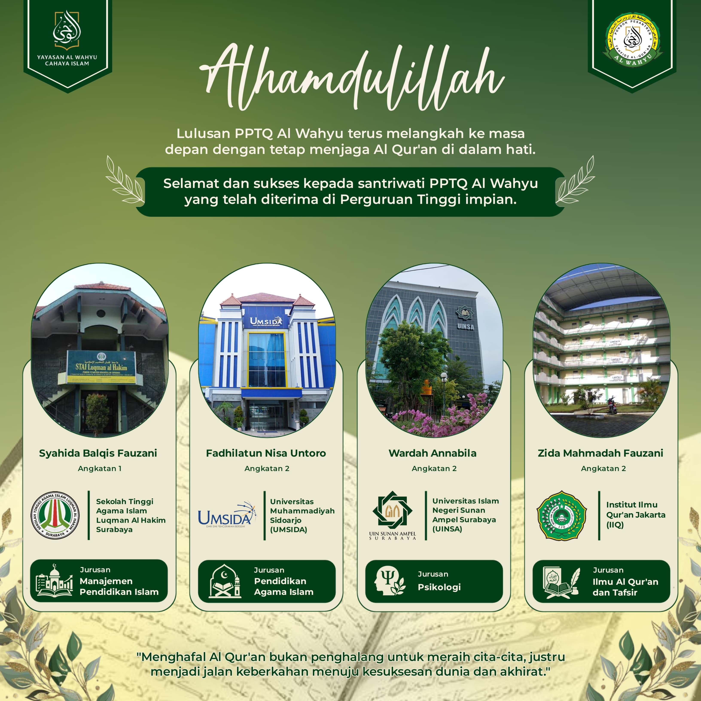

Alhamdulillah, 4 Santriwati PPTQ Al Wahyu Berhasil Diterima di Perguruan Tinggi Pilihan

SIDOARJO - Alhamdulillah, tahniah dan selamat kepada para santriwati PPTQ Al Wahyu yang telah berhasil menorehkan prestasi gemilang dengan diterima untuk melanjutkan pendidikan ke berbagai perguruan tinggi impian mereka. Keberhasilan ini tidak terlepas dari ikhtiar belajar, doa, dan hafalan Al-Qur'an yang mereka jaga dengan penuh keikhlasan.
Daftar Santriwati yang Berhasil Diterima
1. Syahida Balqis Fauzani (Hafalan 30 Juz)
Syahida berhasil lolos dan diterima di STAIL (Sekolah Tinggi Agama Islam Luqmanul Hakim Surabaya) pada Program Studi Manajemen Pendidikan Islam. Pencapaian ini merupakan buah dari kedisiplinan dan hafalan Qur'an yang kuat selama menimba ilmu di PPTQ Al Wahyu.
2. Zida Mahmad Fauzani (Hafalan 30 Juz)
Zida diterima di IIQ (Institut Ilmu Al-Qur'an Jakarta), pada Jurusan bergengsi Ilmu Qur'an dan Tafsir. Sebuah pencapaian yang sangat relevan dan linier dengan prestasi hafalan Qur'annya yang sudah mutqin.
3. Wardah An Nabila (Hafalan 30 Juz)
Wardah lolos masuk ke UINSA (Universitas Islam Negeri Sunan Ampel Surabaya) pada Jurusan Psikologi. Ini membuktikan bahwa seorang penghafal Al-Qur'an juga sangat mampu bersaing di bidang keilmuan umum dan sains.
4. Fadhilatu Nisa Untoro (Hafalan 15 Juz)
Fadhilatu berhasil diterima di UMSIDA (Universitas Muhammadiyah Sidoarjo) pada Jurusan Pendidikan Agama Islam, bersiap untuk meneruskan tongkat estafet dakwah di dunia pendidikan formal.
Prestasi ini menjadi bukti nyata bahwa pendidikan tahfidz yang dipadukan dengan akademik, karakter, kepemimpinan, dan teknologi mampu melahirkan generasi muslimah yang berilmu, berakhlak mulia, serta siap menghadapi tantangan zaman.
"Menghafal Al Qur'an bukan penghalang untuk meraih cita-cita, justru menjadi jalan keberkahan menuju kesuksesan dunia dan akhirat."
Di PPTQ Al Wahyu, para santriwati tidak hanya dididik untuk sekadar menjadi hafidzah Al-Qur'an, tetapi mereka juga dibimbing secara intensif untuk menjadi pribadi yang mandiri, berprestasi, dan memiliki visi masa depan yang cerah melalui program:
- 📖 Tahfidz Al-Qur'an Bersanad
- 🎓 Persiapan Melanjutkan ke Perguruan Tinggi
- 🌟 Leadership & Character Building
- 💻 Penguasaan Teknologi dan Keterampilan Modern
Mari bergabung bersama PPTQ Al Wahyu Sidoarjo dan wujudkan impian putri Anda menjadi hafidzah Al-Qur'an yang sukses di dunia dan akhirat. ✍️📚🌹❤️
Pendaftaran Santriwati Baru Masih Dibuka!
Informasi Hubungi:
0812-3020-0098 (Ustadz Hamzah Baya S.Pd.I, M.Pd)